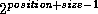
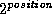

Common Lisp the Language, 2nd Edition
Several functions are provided for dealing with an arbitrary-width field of contiguous bits appearing anywhere in an integer. Such a contiguous set of bits is called a byte. Here the term byte does not imply some fixed number of bits (such as eight), rather a field of arbitrary and user-specifiable width.
The byte-manipulation functions use objects called byte specifiers to designate a specific byte position within an integer. The representation of a byte specifier is implementation-dependent; in particular, it may or may not be a number. It is sufficient to know that the function byte will construct one, and that the byte-manipulation functions will accept them. The function byte accepts two integers representing the position and size of the byte and returns a byte specifier. Such a specifier designates a byte whose width is size and whose bits have weights  through .
[Function]
byte size position
byte takes two integers representing the size and position of a byte and returns a byte specifier suitable for use as an argument to byte-manipulation functions.
[Function]
byte-size bytespec
byte-position bytespec
Given a byte specifier, byte-size returns the size specified as an integer; byte-position similarly returns the position. For example:
(byte-size (byte j k)) == j (byte-position (byte j k)) == k
[Function]
ldb bytespec integer
bytespec specifies a byte of integer to be extracted. The result is returned as a non-negative integer. For example:
(logbitp j (ldb (byte s p) n)) == (and (< j s) (logbitp (+ j p) n))
The name of the function ldb means ``load byte.''
(defun haipart (integer count)
(let ((x (abs integer)))
(if (minusp count)
(ldb (byte (- count) 0) x)
(ldb (byte count (max 0 (- (integer-length x) count)))
x))))
If the argument integer is specified by a form that is a place form acceptable to setf, then setf may be used with ldb to modify a byte within the integer that is stored in that place. The effect is to perform a dpb operation and then store the result back into the place.
[Function]
ldb-test bytespec integer
ldb-test is a predicate that is true if any of the bits designated by the byte specifier bytespec are 1's in integer; that is, it is true if the designated field is non-zero.
(ldb-test bytespec n) == (not (zerop (ldb bytespec n)))
[Function]
mask-field bytespec integer
This is similar to ldb; however, the result contains the specified byte of integer in the position specified by bytespec, rather than in position 0 as with ldb. The result therefore agrees with integer in the byte specified but has zero-bits everywhere else. For example:
(ldb bs (mask-field bs n)) == (ldb bs n) (logbitp j (mask-field (byte s p) n)) == (and (>= j p) (< j (+ p s)) (logbitp j n)) (mask-field bs n) == (logand n (dpb -1 bs 0))
If the argument integer is specified by a form that is a place form acceptable to setf, then setf may be used with mask-field to modify a byte within the integer that is stored in that place. The effect is to perform a deposit-field operation and then store the result back into the place.
[Function]
dpb newbyte bytespec integer
This returns a number that is the same as integer except in the bits specified by bytespec. Let s be the size specified by bytespec; then the low s bits of newbyte appear in the result in the byte specified by bytespec. The integer newbyte is therefore interpreted as being right-justified, as if it were the result of ldb. For example:
(logbitp j (dpb m (byte s p) n))
== (if (and (>= j p) (< j (+ p s)))
(logbitp (- j p) m)
(logbitp j n))
The name of the function dpb means ``deposit byte.''
[Function]
deposit-field newbyte bytespec integer
This function is to mask-field as dpb is to ldb. The result is an integer that contains the bits of newbyte within the byte specified by bytespec, and elsewhere contains the bits of integer. For example:
(logbitp j (deposit-field m (byte s p) n))
== (if (and (>= j p) (< j (+ p s)))
(logbitp j m)
(logbitp j n))
(deposit-field newbyte bytespec integer)
by computing
(logior (logand newbyte m) (logand integer (lognot m)))
where the result of (lognot m) can of course also be computed at compile time. However, the following expression may also be used and may require fewer temporary registers in some situations:
(logxor integer (logand m (logxor integer newbyte)))
A related, though possibly less useful, trick is that
(let ((z (logand (logxor x y) m))) (setq x (logxor z x)) (setq y (logxor z y)))
interchanges those bits of x and y for which the mask m is 1, and leaves alone those bits of x and y for which m is 0.